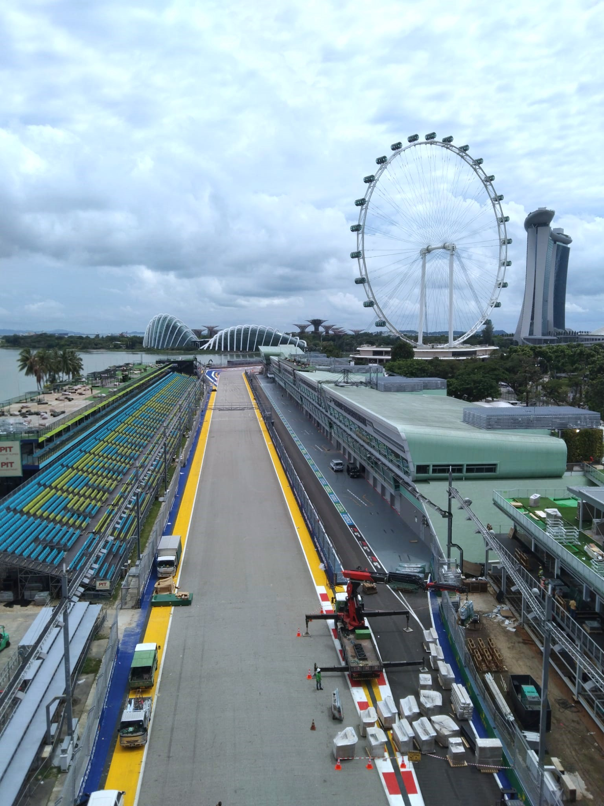
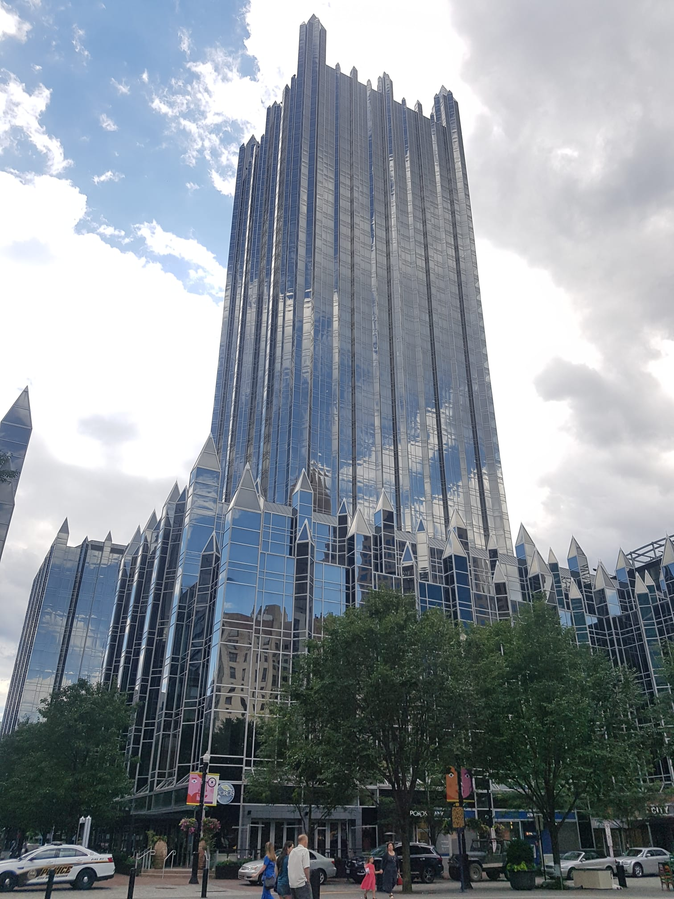

About me
“Too few people recognize that the high technology so celebrated today is essentially a mathematical technology.” — as quoted by Edsger W. Dijkstra
I'm a first-year graduate student in mathematics at Harvard University. Before that, I was an undergraduate in mathematics (with a second major in computer science) at the National University of Singapore, where I completed my honours thesis under the supervision of Wee Teck Gan.
-
Mathematics in the age of machines, article, Jan 2025
These are some of the thoughts I have had for a while, loosely surrounding recent developments in AI and their impact on mathematics, but never got around to putting on paper until now. Though the original motivation for writing this article was to address recent developments in AI, the article is actually more broadly about how I view mathematics, and the role I feel mathematics plays in our world.
“Mathematics is the science of skillful operations with concepts and rules invented just for this purpose. The principal emphasis is on the invention of concepts. Mathematics would soon run out of interesting theorems if these had to be formulated in terms of the concepts which already appear in the axioms.” — Eugene Wigner
“In the fall of 1955 we decided that a chess machine was not the thing to start on – that an easier task was to build a theorem prover.” — Herbert Simon, artificial intelligence pioneer
Preprints and papers
See on arXiv.-
Transfer using Fourier transform and minimal representation of \( E_7 \), preprint, Jul 2025
In this paper, we study the Sakellaridis-Venkatesh conjecture for the rank-1 spherical variety \( X = \text{Spin}_9 \backslash F_4 \) using an exceptional theta correspondence. We establish the correct transfer map satisfying relative character identities in this case and show that our transfer map agrees with the formula in (Sakellaridis, 2021). Moreover, we show how our techniques lead to a characterization of \( X \)-relatively cuspidal representations. -
Generalised Whittaker models as instances of relative Langlands duality II: Plancherel density and global periods, preprint, Jan 2024
In part I of this paper (below), a general family of instances of the relative Langlands duality of Ben-Zvi-Sakellaridis-Venkatesh [BZSV] were proposed and studied in the setting of branching problems for smooth representations. In this paper, we show the numerical conjectures of [BZSV] for the local Plancherel density, as well as an application to their conjectures on global periods, for this general family of instances. -
Global theta lifting and automorphic periods associated to nilpotent orbits, Journal of Number Theory, Vol. 271 (2025), 122–149
A systematic way to organise the interesting periods of automorphic forms on a reductive group \( G \) is via the theory of nilpotent orbits of \( G \). On the other hand, it is known that the theta correspondence can be used effectively to relate automorphic periods on each member of a dual pair. In this paper, I establish this relation in full generality, facilitated by a certain transfer of nilpotent orbits via moment maps. This is the analogous global result to the local result previously established by Gomez and Zhu. -
Generalised Whittaker models as instances of relative Langlands duality, Advances in Mathematics, Vol. 463 (2025), 110129
This is my honours thesis, supervised by Prof Wee Teck Gan, on the relative Langlands duality recently proposed by Ben-Zvi, Sakellaridis and Venkatesh. At the most basic level, this is a duality of a certain class of symplectic varieties with Hamiltonian reductive group action, which is expected to have implications for many incarnations of the Langlands program. One local incarnation of this duality theory is that it leads, via the philosophy of geometric quantization of Hamiltonian varieties, to a duality theory of branching problems in the representation theory of reductive groups over local fields, which often unexpectedly relates two a priori unrelated branching problems. The generalised Whittaker (also known as Gelfand-Graev) representations serve as the prototypical example for such branching problems. -
On knots that divide ribbon knotted surfaces, Mathematical Proceedings of the Cambridge Philosophical Society, Vol. 177(3) (2024), 439–453
We investigate a new property of knots which is expected to have implications for the famous unresolved slice-ribbon conjecture.
FUSRP (Fields Undergraduate Summer Research Programme) project with Ceyhun Elmacioglu, Anshul Guha, Yun-chi Tang and supervised by Profs Hans Boden, William Rushworth and Dr Homayun Karimi.
Talks and notes
These are some of the notes (only for talks I've given) and writings I've made throughout my undergraduate career, arranged roughly by topic. (Those notes that are handwritten were made primarily for my own reference, but I've included them here as they are fairly complete content-wise. One of the items on my to-do list is to type these notes up neatly in LaTeX.)-
BGG Category \( \mathcal{O} \), presentation slides, Nov 2022
A rather comprehensive and detailed introduction to the BGG category \( \mathcal{O} \). This was a class presentation for MA5211 Lie Theory. -
Translation functors, handwritten presentation notes, Oct 2021
An introduction to translation functors in the context of the BGG category \( \mathcal{O} \).
This was part of a learning seminar on category \( \mathcal{O} \), with a view towards Soergel bimodules and the Kazhdan-Lusztig conjecture. -
Semisimple orbits, handwritten presentation notes, Jan 2022
On the classification of semisimple orbits in semisimple Lie algebras, in preparation for the subsequent classification of nilpotent orbits in semisimple Lie algebras.
This was part of a learning seminar on nilpotent orbits in semisimple Lie algebras. -
Induced nilpotent orbits, handwritten presentation notes, Mar 2022
On the Lusztig-Spaltenstein theory of induced nilpotent orbits, which help to reduce the study of nilpotent orbits to that of smaller (Levi) subalgebras.
This was part of a learning seminar on nilpotent orbits in semisimple Lie algebras. -
Affine Hecke algebras, handwritten presentation notes, Sep 2022
Affine Hecke algebras arise naturally in the representation theory of \(p\)-adic groups; this talk introduces the theory of affine Hecke algebras and their associated graded versions, as developed by Lusztig. This theory is used to work towards a geometric parameterization of unipotent representations of \(p\)-adic groups, in the spirit of the local Langlands conjectures.
This was part of a learning seminar on (unipotent) representations of \(p\)-adic groups. -
Sheaves, presentation slides, Nov 2021
All about sheaves, following Hartshorne and most of its exercises.
This was a class presentation for MA5208 Algebraic Geometry; each of us was (randomly) assigned a section of (exercises of) Hartshorne chapters II – III to discuss and present. -
Symmetric spaces and their classification, presentation slides, Mar 2023
On (locally) symmetric spaces, the classification of Riemannian symmetric spaces, and the corresponding relations to (real) Lie theory. This was a class presentation for MA5216 Differential Geometry. -
Classifying space for phases of matrix product states, handwritten presentation notes, Apr 2025
In this talk we introduced recent work of Beaudry-Hermele-Pflaum-Qi-Spiegel-Stephen (arXiv:2501.14241), on constructing a classifying space for phases of matrix product states (MPS). -
2D TQFTs and Frobenius algebras, handwritten presentation notes, Mar 2023
On the classification of 2-dimensional topological quantum field theories (TQFTs) as being equivalent to commutative Frobenius algebras, why this motivates the subsequent consideration of extended TQFTs, and an interesting example with physical motivation and applications to the representation theory of finite groups.
This was part of a learning seminar on TQFT, with input from both the physical as well as categorical sides. -
Knot invariants, tensor categories and quantum groups, presentation slides, Mar 2023
How are knot invariants and (representations of) quantum groups related? Answer: via tensor categories.
This was a class presentation for a topics course on tensor categories. -
Knot invariants and the representation theory of quantum groups, final report, Jul 2021
UROPS (Undergraduate Research Opportunities Programme in Science) final report on Khovanov homology and the Reshitikhin-Turaev invariants. Project supervised by Prof Huanchen Bao.
Teaching
- Harvard Directed Reading Program (DRP)
-
CS3230 Design and Analysis of Algorithms
- AY22/23 Sem 1
- AY21/22 Sem 1
-
CS3243 Introduction to Artificial Intelligence
- AY21/22 Sem 2
- AY21/22 Sem 1
-
CS2040 Data Structures and Algorithms
- AY21/22 Sem 1
- AY20/21 Special Term II
- AY20/21 Sem 2
(links active during the semester)
I have also served as teaching assistant for CS3244 Machine Learning, but not taking any tutorial groups.
Places
Singapore: Heidelberg:

Darwin:


Toronto:
Niagara:
London:
Amsterdam:
Pittsburgh: 
Rio:
Hong Kong:
Go back to top.